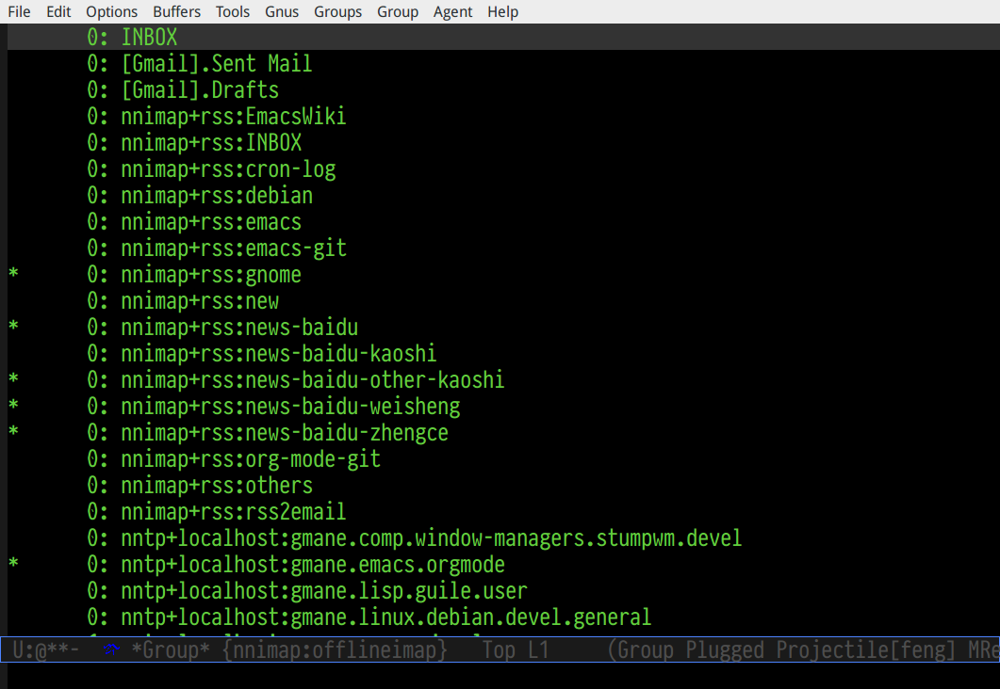
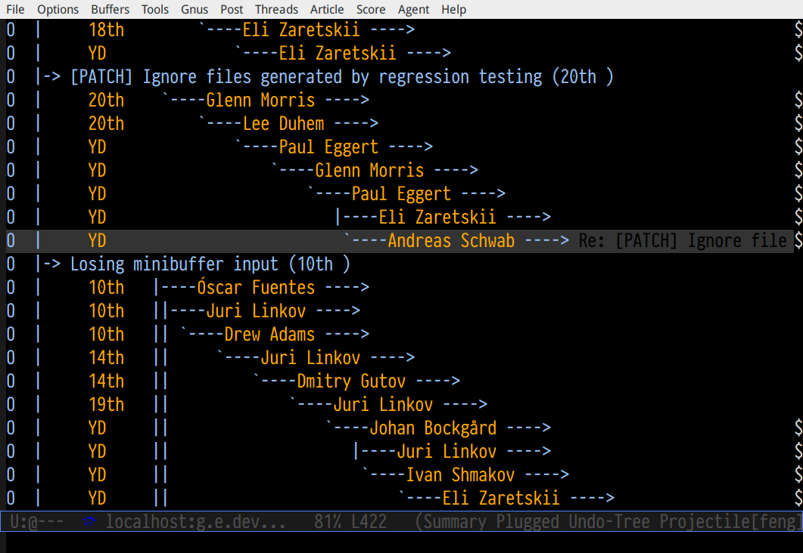
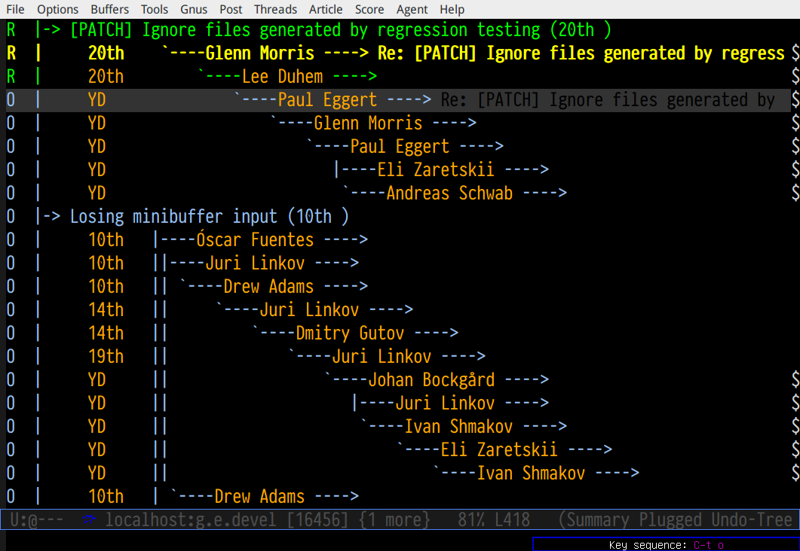
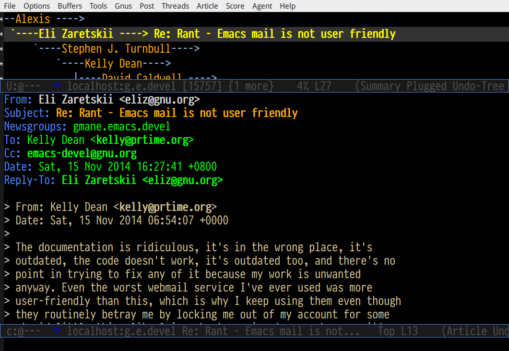
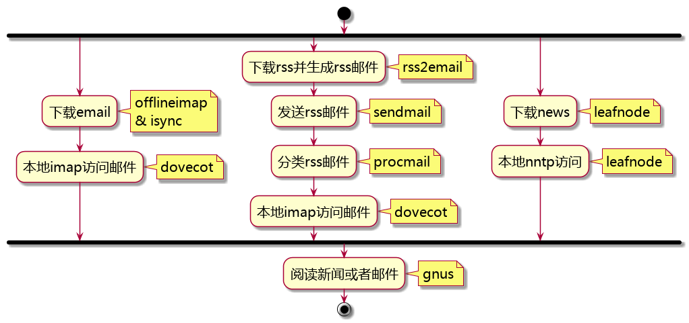

eh-gnus配置说明
1 显摆gnus截图
1.1 gnus组名称列表（group buffer）

1.2 gnus新闻标题列表（summary buffer）


1.3 gnus新闻标题+正文（summary buffer + article buffer）

2 解释配置原理

3 设定基本信息
3.1 邮箱访问设置
- 邮箱地址:
YOUREMAIL@gmail.com - 邮箱密码:
YOURPASSWORD - smtp服务器地址:
smtp.gmail.com - smtp服务器端口:
587 - imap服务器地址:
imap.gmail.com - imap服务器端口:
993
3.2 本机设置
- 本机登陆用户:
feng - HOME目录:
/home/feng
3.3 dovecot设置
- email保存目录:
/home/feng/maildir - dovecot常规邮件保存账户:
myemail - dovecot常规邮件保存账户密码:
myemail-password - dovecot rss订阅邮件保存账户:
myrss - dovecot rss订阅邮件保存账户:
myrss-password
4 安装辅助程序
安装msmtp, offlineimap, isync, leafnode, dovecot
sudo apt-get install msmtp msmtp-gnome offlineimap isync leafnode dovecot-core dovecot-imapd
Debian 7软件库中的html2test和feedparser版本太低，只能使用其他方式安装rss2email
首先： 安装easy_install和easy_install3。
sudo apt-get install python3-setuptools
然后： 使用easy_install3安装rss2email。注意： rss2email使用python3。
sudo easy_install3 html2text sudo easy_install3 feedparser sudo easy_insatll3 rss2email
rss2email使用base64编码中文，procmail处理起来非常费事，我这里使用一个拼音后处理插件，在rss转化为邮件的过程中，自动添加两个邮件field：X-Translate-From 和 X-Translate-Subject，用来保存Subject和From中文字符串的拼音，这样就可以在procmailrc中使用拼音来分类rss。
将rss2email_post_hooks所在的目录添加到PYTHONPATH（语法与shell里面的PATH一样），将下面一行代码写入~/.bashrc文件。
export PYTHONPATH=$PYTHONPATH:/home/feng/project/emacs-packages/emacs-helper/other/rss2email-template/
5 配置辅助程序
5.1 msmtp
msmpt配置文件~/.msmptrc的内容如下：
defaults
tls on
tls_certcheck off
tls_starttls on
account default
host smtp.gmail.com
domain smtp.gmail.com
tls on
tls_certcheck off
tls_starttls on
auth on
user YOUREMAIL@gmail.com
from YOUREMAIL@gmail.com
password YOURPASSWORD
port 587
logfile ~/.msmtp.log
上述配置中保存邮箱的 明文密码 ，安全性相对较低15，如果需要较高的安全性，可以使用smtp-gnome，将邮箱帐号密码保存到gnome-key-ring中。同时要删除或者注释掉password一行15。
cd /usr/share/doc/msmtp-gnome/scripts/ python ./msmtp-gnome-tool.py --username=YOUREMAIL@gmail.com --server=smtp.gmail.com
5.2 dovecot
dovecot的配置文件： /etc/dovecot/dovecot.conf
protocols = imap # It's nice to have separate log files for Dovecot. You could do this # by changing syslog configuration also, but this is easier. log_path = /var/log/dovecot.log info_log_path = /var/log/dovecot-info.log # Disable SSL for now. ssl = no disable_plaintext_auth = no # We're using Maildir format mail_location = maildir:/home/feng/maildir/%u # Authentication configuration: auth_verbose = yes auth_mechanisms = plain passdb { driver = password-file args = /etc/dovecot/password } userdb { driver = static args = uid=feng gid=feng home=/home/feng/maildir/.home/%u }
与dovecot配置文件对应的password文件： /etc/devecot/password
myemail:{plain}myemail-password:feng:feng::/home/feng/maildir/.home/myemail::userdb_mail=maildir:/home/feng/maildir/myemail
myrss:{plain}myrss-password:feng:feng::/home/feng/maildir/.home/myrss::userdb_mail=maildir:/home/feng/maildir/myrss
5.3 offlineimap (与isync两者选一）
offlineimap配置文件: ~/.offlineimaprc
[general] accounts = default-email-account pythonfile = .offlineimap.py ui = quiet [Account default-email-account] localrepository = LocalIMAP remoterepository = RemoteIMAP # autorefresh = 3 [Repository LocalIMAP] type = IMAP remotehost = localhost remoteuser = myemail remotepass = myemail-password holdconnectionopen = yes [Repository RemoteIMAP] type = IMAP remotehost = imap.gmail.com remoteuser = YOUREMAIL@gmail.com # 安装包python-keyring,然后使用下的命令保存密码。 # import keyring # keyring.set_password("imap.gmail.com","YOUREMAIL@gmail.com", "YOURPASSWORD") # remotepasseval = keyring.get_password("imap.gmail.com","YOUREMAIL@gmail.com") remotepass = YOURPASSWORD ssl = yes cert_fingerprint=f3043dd689a2e7dddfbef82703a6c65ea9b634c1 maxconnections = 3 realdelete = no # holdconnectionopen = true # keepalive = 60 # nametrans = lambda folder: re.sub('.*Spam$', 'Spam', # re.sub('.*Drafts$', 'Drafts', # re.sub('.*Sent Mail$', 'Sent', # re.sub('.*Starred$', 'Flagged', # re.sub('.*Trash$', 'Trash', # re.sub('.*All Mail$', 'Archive', folder)))))) folderfilter = lambda foldername: not re.search('(Trash|Del|Archive|All Mail|Spam|Chats)', foldername)
可以在桌面添加offlineimap的启动图标，双击图标后开始同步邮件：
保存下面的配置到文件: ~/.local/share/Application/offlineimap.desktop
[Desktop Entry] Exec="x-terminal-emulator " "-e" "start_daemon -n19 -c2 -p7 python2.7 offlineimap" Icon=/home/feng/Picture/icons/offlineimap.png Name=OfflineIMAP Encoding=UTF-8 Terminal=false Type=Application Categories=Application;Network;
offlineimap启动器：start-daemon.sh
#!/bin/sh
set -efu
ionice_class=
ionice_priority=
nice=
while getopts c:p:n: f; do
case $f in
c) ionice_class=$OPTARG;;
p) ionice_priority=$OPTARG;;
n) nice=$OPTARG;;
*) exit 2;;
esac
done
shift $((OPTIND - 1))
cmd=$*
io=
if pgrep -u "$(id -u)" -xf -- "$cmd" >/dev/null 2>&1; then
exit 0
fi
if type ionice >/dev/null 2>&1; then
[ -n "$ionice_class" ] && { io=1; cmd="-c $ionice_class $cmd"; }
[ -n "$ionice_priority" ] && { io=1; cmd="-n $ionice_priority $cmd"; }
[ -n "$io" ] && cmd="ionice $cmd"
fi
if type nice >/dev/null 2>&1; then
[ -n "$nice" ] && cmd="nice -n $nice $cmd"
fi
exec $cmd
5.4 isync（与offlineimap两者选一）
isync配置文件： ~/.mbsyncrc
IMAPAccount remote-email-account Host imap.gmail.com User YOUREMAIL@gmail.com Pass YOURPASSWORD UseIMAPS yes # RequireSSL yes # You should install package: ca-certificates. CertificateFile /etc/ssl/certs/ca-certificates.crt IMAPStore remote-email-store Account remote-email-account IMAPAccount local-dovecot-account Host localhost User myemail Pass myemail-password IMAPStore local-dovecot-store Account local-dovecot-account Channel get-default-email Master :remote-email-store: Slave :local-dovecot-store: # Exclude everything under the internal [Gmail] folder, except the interesting folders Patterns * ![Gmail]* "[Gmail]/Sent Mail" "[Gmail]/Starred" # Or include everything #Patterns * # Automatically create missing mailboxes, both locally and on the server Create Both # Save the synchronization state files in the relevant directory SyncState ~/.mbsyncstate/get-default-email Channel get-all-email Master :remote-email-store: Slave :local-dovecot-store: Patterns "[Gmail]/All Mail" Create Slave Sync New SyncState ~/.mbsyncstate/get-all-email Channel get-spam-email Master :gmail-store: Slave :local-dovecot-store: Patterns "[Gmail]/Spam" Create Master Sync Push SyncState ~/.mbsyncstate/get-spam-email
5.5 leafnode
leafnode运行必须有完整的域名， 如果只将leafnode作为一个news下载器，我们可以设定一个伪造的域名，比如：在debian系统中，我们可以更改/etc/hosts文件：
127.0.0.1 news.tumashu-localhost.org localhost
127.0.1.1 news.tumashu-localhost.org tumashu
# The following lines are desirable for IPv6 capable hosts
::1 localhost ip6-localhost ip6-loopback
ff02::1 ip6-allnodes
ff02::2 ip6-allrouters
注意： 设定域名这个步骤非常关键， 建议重新启动系统，另外系统时间也要设定正确。
leafnode配置
sudo dpkg-reconfigure leafnode
配置选项选择：
- Server to download news from: (我使用 news.gmane.org)
- Network connection type: (permanent，一小时下载一次)
- Enable access controls for Leafnode? (yes)
- Update the list of available groups? (第一次使用建议选yes)
配置完成后，建议手动下载news:
sudo /etc/news/leafnode/do-fetch-news
5.6 rss2email
rss2email配置文件: ~/.config/rss2email.conf
[DEFAULT]
from = user@rss2email.invalid
use-8bit = False
force-from = False
use-publisher-email = False
name-format = {feed-title}: {author}
to = feng@localhost
proxy =
feed-timeout = 120
active = True
digest = False
date-header = False
date-header-order = modified, issued, created, expired
bonus-header =
trust-guid = True
trust-link = False
encodings = US-ASCII, ISO-8859-1, UTF-8, BIG5, ISO-2022-JP
post-process = rss2email_post_hooks.pinyin_header add_pinyin_header
digest-post-process =
html-mail = True
use-css = True
css = h1 {
font: 18pt Georgia, "Times New Roman";
}
body {
font: 12pt Arial;
}
a:link {
font: 12pt Arial;
font-weight: bold;
color: #0000cc;
}
blockquote {
font-family: monospace;
}
.header {
background: #e0ecff;
border-bottom: solid 4px #c3d9ff;
padding: 5px;
margin-top: 0px;
color: red;
}
.header a {
font-size: 20px;
text-decoration: none;
}
.footer {
background: #c3d9ff;
border-top: solid 4px #c3d9ff;
padding: 5px;
margin-bottom: 0px;
}
border: solid 4px #c3d9ff;
}
margin-left: 5px;
margin-right: 5px;
}
unicode-snob = False
links-after-each-paragraph = False
body-width = 0
email-protocol = sendmail
sendmail = /usr/sbin/sendmail
smtp-auth = False
smtp-username = username
smtp-password = password
smtp-server = smtp.yourisp.net:25
smtp-ssl = False
smtp-ssl-protocol = SSLv3
imap-auth = False
imap-username = username
imap-password = password
imap-server = imap.yourisp.net
imap-port = 143
imap-ssl = False
imap-mailbox = INBOX
verbose = warning
[feed.org-mode.git]
url = http://repo.or.cz/w/org-mode.git/rss
[feed.emacs.git]
url = http://repo.or.cz/w/emacs.git/rss
[feed.baidu.internet.news]
url = http://news.baidu.com/n?cmd=1&class=internet&tn=rss
procmailrc配置文件: ~/.procmailrc
## VERBOSE=on ## LOGFILE=$HOME/.procmail.log :0 * ^From.*Cron Daemon RSS/.cron-log/ :0 * X-RSS-Feed.*baidu.*class= { :0 * ^X-Pinyin-Subject.*(apple|pingguo|htc|sanxin) Maildir/rss/.news-baidu-mobile/ :0: Maildir/rss/.news-baidu/ } :0 * ^User-Agent.*rss2email * ^From.*emacs|Emacs|EMACS Maildir/rss/.emacs/ :0 * ^User-Agent.*rss2email Maildir/rss/.others/
直接使用r2e命令添加rss地址太罗嗦，写一个shell脚本来处理：
- 保存下面代码到一个目录, 比如： ~/bin/rss2email.sh
- 安装firefox扩展： AppLauncher
- 配置AppLauncher
- name: rss2email
- path: /usr/bin/x-terminal-emulator
- arguments: –command=~/bin/rss2email.sh &url
#!/bin/bash echo "The Feed url is: $1" echo "Please enter a name for this feed" read feed_name echo "run command: r2e add $feed_name $1" r2e add $feed_name $1 r2e list echo "Wait 10 second or press C-c to quit." read -t 10
6 cron配置
在shell中运行crontab命令：
crontab -e
然后添加如下内容： 设定5分钟运行一次offlineimap，1个小时运行一下rss2email。
PYTHONPATH=/home/feng/project/emacs-packages/emacs-helper/other/rss2email-template/ PATH=/usr/local/sbin:/usr/local/bin:/usr/sbin:/usr/bin:/bin:/usr/local/games:/usr/games */5 * * * * /usr/local/bin/start_daemon -n19 -c2 -p7 python2.7 /usr/bin/offlineimap >/dev/null 2>&1 0 */1 * * * /usr/local/bin/r2e run ### DON'T REMOVE THIS LINE ###
然后运行命令：
sudo /etc/init.d/cron restart
7 gnus配置
调整eh-gnus.el文件中如下几行：
(setq gnus-select-method
'(nnimap "myemail"
(nnimap-address "localhost")
(nnimap-stream network)))
(add-to-list 'gnus-secondary-select-methods
'(nnimap "myrss"
(nnimap-address "localhost")
(nnimap-stream network)))
(add-to-list 'gnus-secondary-select-methods
'(nntp "localhost"))
然后运行gnus。